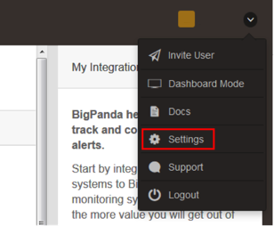
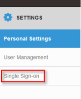

This setup might fail without parameter values that are customized for your organization. Please use the Okta Administrator Dashboard to add an application and view the values that are specific for your organization.
- Navigate to the BigPanda site and sign in. Select Settings from the top menu, as shown below.

- On the Settings menu that opens, select Single Sign-on, as shown below.

- Set up SAML using the values shown below.
- IDP Issuer/Entity ID:Sign in to the Okta Admin app to generate this variable.
- Login URL/SignOn URL: Sign in to the Okta Admin app to generate this variable.
- Use the following link to download an x.509 Certificate. Upload it to BigPanda, as prompted.Sign in to the Okta Admin app to generate this variable.
- Enable single sign-on using SAML by selecting Configure Okta, and then, selecting Logout and Validate at the end of the section.
- In Okta, in the BigPanda app, enter the callback address for your organization. The address is similar to https://api.bigpanda.io/login/<org_name>/okta/callback, where <org_name> is the name of your organization in BigPanda.
- To test an SP-initiated flow, go to the sign in page, provide an email address, and select login.
- Done!
Note: JIT (Just In Time) provisioning is not supported.